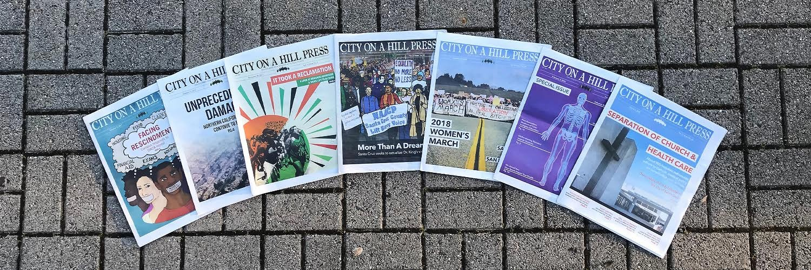

Santa Cruz
Worked as a Photojournalist for the City on a Hill Press. The City on a Hill Press' mission states "Our primary goal is to report and analyze issues affecting the student population and the Santa Cruz community."
Took this role to learn about the world of Press and Photojournalism. Working alongside jounalists, I would attend many events and report on these events by taking pictures and editing them for the press to use in the newspaper and on their website.
I've linked some of the articles I helped take photos for. There were more articles but sadly never got published on the website.
‘We Feed You’ Art Exhibit Exposes Realities of Agricultural Work